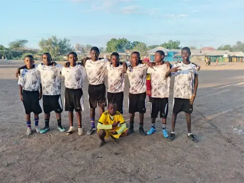
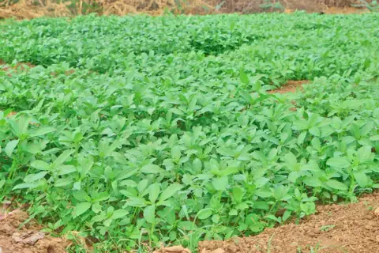
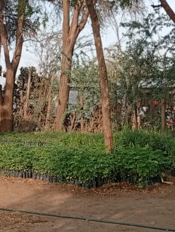
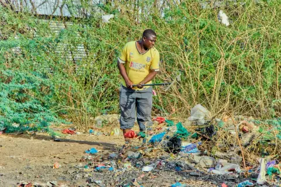
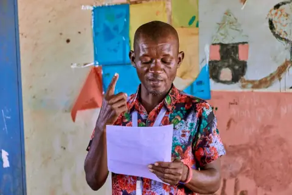
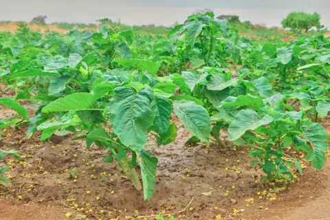

Community-led
Residents help identify problems, plan activities and run local solutions.
Read more →
Future Builders Refugee Organization (FBRO) is a refugee-led community-based organization (CBO) in Kakuma Refugee Camp and Kalobeyei Settlement, Turkana County, Kenya. We provide humanitarian support, advancing peacebuilding, sustainable livelihoods, and youth empowerment across refugee and host communities.
Our programsResidents help identify problems, plan activities and run local solutions.
Read more →From peacebuilding and livelihoods to environment, health, education and culture.
Read more →NGOs, donors, CBOs, government institutions, and youth and women groups are welcome.
Read more →FBRO was founded in 2024 in Kakuma Refugee Camp, Turkana County, Kenya, by refugees who stepped forward to respond to everyday humanitarian challenges: youth unemployment, poverty, conflict, environmental stress, and limited access to education and skills.
As a refugee-led community-based organization (CBO), we involve community members in identifying problems, planning activities, and carrying out sustainable solutions across Kakuma and Kalobeyei Settlement, partnering with youth groups, women groups, community elders, and humanitarian organizations.
More about FBRO →A peaceful, empowered, and self-reliant community where refugees and host communities live with dignity and hope.
To support refugees and vulnerable host communities through community-led programs that promote livelihoods, education, peacebuilding, environmental conservation, and youth empowerment.
Seven program areas, shaped and run with the community.






Essential facts about our organization, location and partnership model.
FBRO is a refugee-led community-based organization founded in 2024 in Kakuma Refugee Camp by refugees who wanted to address local challenges including unemployment, lack of youth opportunities, poverty, conflict, and limited educational access.
Our initiatives take place throughout Kakuma Refugee Camp and Kalobeyei Integrated Settlement in Turkana County, Kenya, serving both refugees and vulnerable host community members.
We operate seven core programs: peacebuilding and social cohesion, livelihood support, youth empowerment and skills development, education and community awareness, environmental conservation, community health and wellbeing, and cultural activities.
We welcome collaboration with NGOs, donors, CBOs, government institutions, and local groups. You can submit an inquiry through our Get involved page or email our team directly at futurebuildersrefugeeorganizat@gmail.com.
Partnerships and teamwork make our impact stronger and longer lasting.
We welcome collaboration with NGOs and humanitarian organizations, refugee-led organizations, community-based organizations, government institutions, donors and development partners, and youth and women groups.